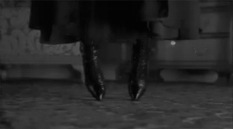

1
Mag Mell - Pansiyon / Aleksandra Ölmek İstiyor
« : 19 Eylül, 2022 17:50:31 - Kurgusal Tarih: Ekim 1866 »
⎯⎯⎯⎯⎯⎯⎯ ✛ ⎯⎯⎯⎯⎯⎯⎯
[justify]13 Kasım 1860 akşamı Aleksandra kendini öldürme zamanının -nihayet!- geldiğine karar verdi. Mag Mell’de kiraladığı odasını dikkatlice temizledi, ütülü elbiselerinden birini giydi ve bir taburenin üzerine çıktı.
✛
Darağacının düğümü daralıyordu.
Yakında boğazını sıkan ilmik nefesini kesecek, yavaşça ve acıyla alacaktı bedeninden yaşamı. Zamanı dolmak üzereydi. Kimseye, kendine bile, bundan bahsetmiyordu. Biliyordu ki konusunu açarsa onu ciddiye almayacak ya da tam tersi ona fazlaca endişe duyacaklardı. Kimsenin onun hakkında endişelenmesini istemiyordu. Sessizce gidecekti, on sekiz yıl önce dünyaya gözlerini açtığındaki sessizlik gibi. On sekiz yıl yeterince uzun bir süreydi yaşamın gerçek yüzüyle karşılaşmak için.
Bazıları hızlı yaşar, hızlı ölürdü. O da hızlı büyümüştü, belki de hiçbir zaman yaşıtları kadar çocuk olmamıştı. Şartlar mı öyle gerektirmişti? Hayır, o diğerlerinden farklıydı. Dünya onun evi olamamıştı bir türlü, kendini buraya ait hissedemiyordu. Burada ona ait bir yer yoktu, varsa da çoktan kapılmıştı. Çevresinde hep birileri olmuş, hiç yalnız kalmamış olsa da yalnızlığı sevmişti hep.
Fakat artık enerjisi kalmamıştı rol yapacak. Tek düşünebildiği uyumaktı, o uyumak istiyordu, ardından tekrar uyanmamak. Yorulmuştu, anlarsınız ya? Herkesin böyle zamanları olurdu, her şeyden uzaklaşmak ve yalnızca kendi başına olmak istediği. Nereye giderse gitsin çevresinde hep birileri olacaktı, dolayısıyla bu lanetten kurtulabilmesi için gidebileceği tek bir yer geliyordu aklına: Aşağı.
Tükenen oksijenin etkisi zihnini ele geçirirken sözcüklerin onun için tükendiğini hissediyordu. Olayları bu noktaya getiren de kendisiydi belki. Hiçbir şey için geç olmadığına, iyileşeceğine inanmıştı ancak bunun yerine bir bağımlı olmuştu. Tek bir hissinin bile işlemediği o birkaç dakikalık anlara bağımlı olmuştu.
İnsanların onun neden kendini öldürmeyi seçtiğini anlamasına ihtiyacı yoktu. O seçimini yapmıştı.
Ve saatin tik takları işledi, takvimin sayfaları tükendi her ‘bu defa son’ dediğinde; kaçınılmaz olan ufukta büyümeye başlamıştı çok geçmeden. Onu ne kadar yok sayarsa saysın giderek daha da belirginleşmişti başından beri orada olduğunu belli etmek için; bir ölüm arzusu. Ondan kaçmak için saptığı bütün sapaklar yine aynı çıkmaza giderken yolu ne kadar dolandırırsa dolandırsın aslında kaçma şansını kaybetmişti çoktan. Öyle ki bütün bu zaman boyunca beyhudeydi bütün çabası, yukarıda biri varsa alay edercesine gülüyordu koltuğundan.
Bedeninin kasılmaya başladığını hissetti. Göğsünde şiddetli bir basınç vardı, boynundaki ilmeği çözmek istiyordu. Biliyordu ki bunu yaparsa ölemezdi, acı içinde kıvranmak Tanrının ona bahşettiği yaşama hakkından vazgeçmenin bir parçasıydı, onu cehennemde bekleyen cezanın da bir ön gösterimi. Eğer inançlı olsaydı bundan korkardı fakat yıllar önce tanrı yalanına inanmayı bırakmıştı. Bir Tanrı varsa bile ölmüştü, artık onları izlemiyordu.
Tam bulunduğu noktada durup geriye dönüp baktığında tek bir soru çınlıyordu zihninde: Buraya nasıl geldim?
Bu noktaya nasıl gelmişti sahiden? İpin ucunu ne zaman kaçırmıştı ya da ipin ucu gerçekten var mıydı?
Aptal bir yazgıydı onu uykularından edip içten tüketen. Çok önceden belirlenmişti, belki de kendisi buna neden olmuştu bunu hiçbir zaman bilemeyecekti. Gerçi artık bir önemi var mıydı?
Kulaklarındaki uğultu giderek artıyordu, gözlerinin önünde küçük benekler dolaşmaya başlamıştı, darağacına çıktığından beri ilk kez korku duydu. Bilinmeze doğru gidişin derin bir korkusuydu bu.
Çok uzun sürmedi. Biraz sonra bilincini kaybetti.
✛
O akşam ölümün soğuk, kemikli parmakları onun ruhuna erişemedi. Gözlerini açtığında parlak ışığın parlaklığı canını yaktı, “Cehennem böyle bir yer mi?” diye düşündü. Cehennemde değildi, orada kimsenin gözüne ince bir çubuktan yayılan ışık huzmesi sokmayacağına emindi, Isolde Hanım’ın kollarının arasındaydı ve bir kez daha -istemeden- ecelin ellerinden kaçmıştı.
[/justify]